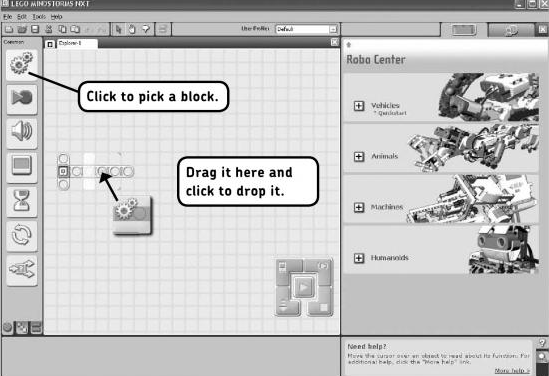
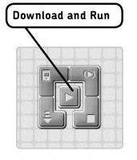
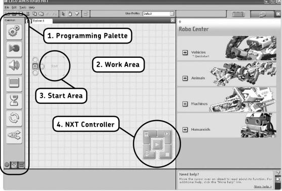
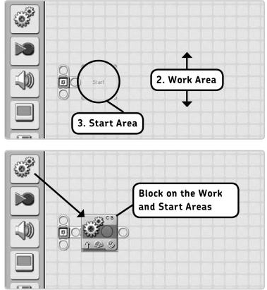
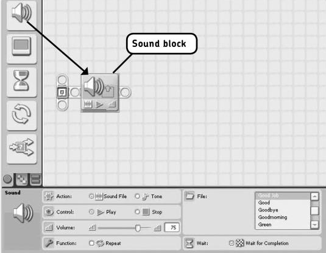
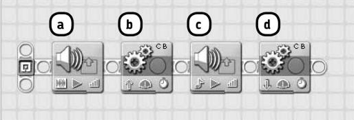
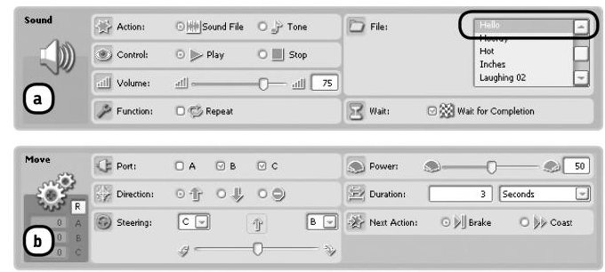
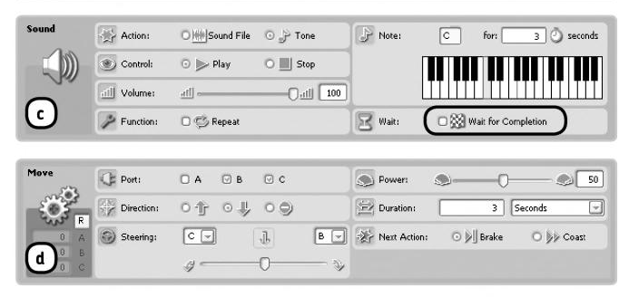
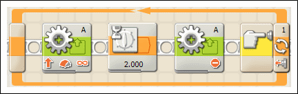

Primii Pasi :).

Inainte de a incepe prgramarea efectiva construiti unul din robotii descrisi in tutorialele de contructie
Dupa ce ati construit unul din roboti(sa zicem shooterbotul) va trebuii sa ii dam o functionalitate acestuia.
Un program este un set de instructiuni care ii spun robotului ce sa faca si cum sa se comporte in anumite situatii. Spre exemplu un program l-ar putea face pe robot sa mearga un timp inainte iar apoi sa vireze stanga.
Un prim program
Veti arunca o privire la mediul NXT-G de programare, realizand si incarcand un program mic in robot.Pentru a crea un program urmati pasii de mai jos.1.Conectati robotul la computer folosind cablul usb si deschideti mediul NXT.
2. Creati un nou program introducant numele Explorer-1 in cutia Create new program, iar apoi apasati butonul GO>>. Puteti alege orice nume pentru programul vostru dar e bine sa alegeti un num intuitiv.
3. Alegeti un block si plasati-l la locatia indicata de figura de mai jos. Amintiti-va ca un program nu e altceva decat un set de instructiuni corespunzatoare actiunior pe care trebuie sa le faca rootul. Blocul pe care l-ati plasat e o asemenea intructiune, aceasta face robotul sa mearga inainte o perioada scurta.

4. Odata ce ati terminat pasii de la 1 la 3 apasati butonul Download and Run si asteptati sa vedeti cum se misca robotul 
Descrierea scurta a mediului
Acum ca am vazut cum putem face un robot sa se miste, ne vom uita la diferite sectiuni ae softului NXT-G pentru a intelege mai bine cum sa creem si sa editam programe. Figura de mai jos arata cum ar trebuii sa va arate ecranul dupa ce ati inceput sa lurcati la un program nou. Vom discuta pe scurt despre sectiunile marcate.
1. Palleta de programare
Un program pentru robotul vostru consta in unul sau mai multe blocuri de programare. Fiecare bloc instruieste pe robot sa faca ceva, cum ar fi sa mearga inainte sau sa scoata sunete. Puteti alege oricare din aceste blocuri din Paleta de programare. Exista mai multe palete de programare dar pentru momement ne vom folosi doar de una.2. Spatiul de lucru
Odata ce ati selectat un bloc pentru a-l folosi, il amplasati in spatiul de lucru asa cum arata si figura de mai jos. Spatiul de lucru este locul unde va creati programele. De obicei un program este alcatuit din mai mult decat un bloc.
Pentru pune un bloc pe spatiul de lucru, pur si simplu dati click pe o icoana din Paleta de Programare, iar apoi dati click in spatiul de lucru unde vreti sa plasati blocul.
Stergerea sau a miscarea anumitore blocuri Odata ce ati plasat un bloc in spatiul de lucru, puteti sa il miscati dand click pe el cu butonul stang al mousului si tinand butonul apasat miscati blocul unde doriti.
Pentru a sterge un block din spatiul de lucru, dati click pentru a-l selectasi apasati tasta DELETE.
3. Spatiul de START
Spatiul de start este locul in care va trebuii sa va puneti primul block de programare. Veti atasa toate blocurile urmatoare la dreapta.4. Controlerul NXT
Folositi controlerul pentru a va transfera progrmele in robot.Asigurati-va ca robotul e conectat si apasati butonul download and run pentru a incarca programul.Blocurile in cadrul mediului de dezvoltare NXT
Exista multe blocuri de programare, inclusiv blocuri care fac robotul sa scoata sunete, sau sa se miste. Fiecare din aceste blocuri are numele lui si aspectul luispecific, deci puteti diferentia blocurile si din punct de vedere vizual atunci cand le amplasati in spatiul de lucru. Combinatia diferita a blocurilor si setarilor vor face un robot sa se comporte diferit. Am vazut comportamentul blocului de miscare mai sus. Avand exemplul cu robotul care merge inainte, incercati sa faceti o aplicatie in care robotul sa mearga inapoi(Sugestie: Trebuie facute anumite schimbari din panoul de configurare pentru acest task). Blocul sunet Un alt block interesant este blocul de sunet. Acest bloc poate reda doua tipuri de sunete. Un simplu ton(un beep) sau un fisier de sunet ca si aplauze sau un cuvant spus(de exemplu robotul poate spune "Yes" sau "No"). Configurerea blocului de sunet Desi fiecare block de programare permite robotului sa faca ceva diferit toate blocurile sunt folosite in acelasi fel. Cu alte cuvinte, selectati un bloc de tip Sound din paleta de programare si plasati-l pe spatiul de lucru( la fel cum ati facut si cu blocul move). Odata atasat trebuie sa schimbati doar setarile blocului din paleta de configurare. Creati un nou program Explorer-Sound si plasati blocul de tip sunet in spatiul de lucru.
Folositi setarea Action a blocului din Configuration Panel pentru a seta daca blocul va reda un simplu ton sau un fisier audio.
Depinzand de optiunea selectata panoul de configurare se va modifica.
Puteti selecta din Control box daca sunetul sa fie sau nu redat.
Puteti folosi setarea de volum pentru a reda sunetul mai tare sau mai incet.
In cutia function puteti specifica daca sunetul sa fie repetat sau nu bifand chekboxul Repeat. Pentru a face sunetul sa nu se mai repete puteti folosi un alt bloc cu setarile de control configurate sa opreasca sunetul.
Daca vreti sa redati un fisier de tip sunet, puteti selecta din o lista predefinita. Puteti selecta sunete variate precum "Hello","Two","You're good"etc. Daca folositi mai multe blocuri de tip sunet robotul va parea ca vorbeste. Daca bifati casuta wait, programul nu va trece la blocul urmator pana cand sunetul va fi redat complet.
Exemplu de robot care foloseste blocul de tip sunet
Programul pe care il veti realiza va face robotul sa se miste in timp ce reda sunete. Pentru a incepe creati un proiect nou, si plasati doua obiecte de tip sound si doua de tip move asa cum arata figura de mai jos.

Configurati blocrile asa cum este aratat in panoul de configurare. Cand sunteti gata cu programul incarcati-l in robot si porniti robotul.


Cum se construieste o bucla while
Pentru a creea o bucla care se executa cat timp o conditie e adevarata in LEGO MINDSTORMS NXT Software, adaugati un bloc de tip loop in sequence beam si puneti blocurile care doriti sa fie executate inauntrul loopului. Adaugati parametrul de control la Sensor pentru a avea bucla controlata de conditia in care se afla senzorul. In exemplul de mai jos bucla e controlata de un senzor de atingere si functioneaza pana cand senzorul e eliberat.